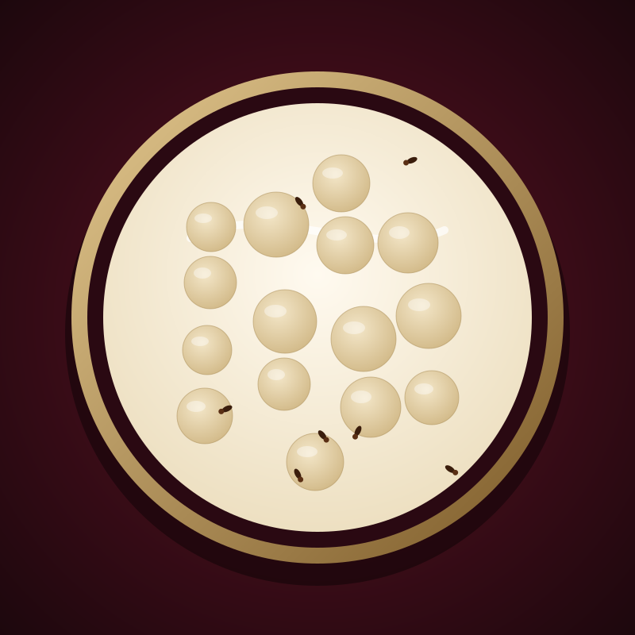

Zobo Reserve
Hibiscus steeped for twelve hours with pineapple peel, ginger and a little clove. Deep, tart and dark as a garnet.
Hibiscus, pineapple, ginger, clove
₦4,500
Order this
Sarauta cold-presses Nigerian fruit into small-batch juice and brews fura da nono the slow way. Every bottle is glass, chilled and delivered within 48 hours.
Three places to begin. Each one is made in small batches and sold until the crate is empty.
Hibiscus steeped for twelve hours with pineapple peel, ginger and a little clove. Deep, tart and dark as a garnet.
Hibiscus, pineapple, ginger, clove
Steamed millet balls in cultured nono and yoghurt, warmed with ginger and clove. The recipe that started it all.
Millet, yoghurt, ginger, clove. Contains milk.
Ripe mango pressed with a squeeze of lime. Thick, bright and unmistakably sun-warmed.
Mango, lime
We keep the process short so the fruit still tastes like itself.
We buy hibiscus, mangoes, oranges and baobab directly from farms across northern Nigeria and Benue, picked ripe rather than early.
Juice is cold-pressed within a day of harvest. Fura is steamed, rolled and cultured with fresh nono in small batches.
Each bottle is sealed by hand, chilled and delivered within 48 hours to Kaduna, Abuja and Lagos.

Fura da nono is one of the oldest drinks in northern Nigeria: millet, spice and cultured milk, shared at the end of a hot day. We keep the recipe, sharpen the ingredients and serve it in glass.
Order one crate, or set up something regular. Three ways to enjoy Sarauta.
Six bottles in a hand-finished box with a gold-stamped card. Made for weddings, naming ceremonies, Sallah and thank-yous.
Order a boxA fixed crate every Friday. Choose your bottles, skip a week whenever you like. Available in Kaduna, Abuja and Lagos.
Set up deliveryWe bring a pouring table, glassware and a host to weddings, corporate lunches and launches, from 30 to 300 guests.
Book a tasting“I ordered a Palace Box for my mother’s birthday. She kept the bottles on the shelf for a week before she could bring herself to open them.”Amina Bello, Abuja
Choose six bottles for delivery, book a tasting for your event, or simply ask us a question.
Order now